Rig Features
Naming and Organization
Hierarchy and Collections
Rig objects are part of the mother collection named character1 (default name, can be renamed, see Set Character Name ).
The rig and UI objects are part of the child collection character1_rig. The custom shapes used for the controller bones shapes are part of the child collection character1_cs. This collection is hidden by default.
Rig objects are also parented to the char_grp empty, as a master/root object of the hierarchy.
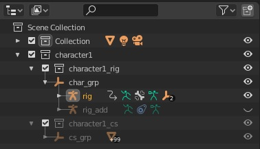
When using the Additive mode for the secondary controllers, a second armature stands besides the main one, named “rig_add”:
The armature named rig is the one to be used by the animator.
The armature named rig_add which is hidden by default is the additive rig. It is not meant to be edited, you can fully ignored it, but it’s good to know some secondary bones rely on it so you must not delete it, when using Additive secondary controllers.
Armature Collections
Note
Armature collections are part of Blender 4 and above only
The armature contains several bones collections to keep the rig organized.
Main: Main bones controllers to manipulate the rig
Secondary: Additional controllers to fine tweak the poses
Deform: Deforming bones
Reference: Reference bones used as guides to align the rig bones on. Typically, this collection is displayed when clicking Edit Reference Bones. See Rig Definition
mch: The mch collections hold internal, mechanical bones that are not supposed to be selected or edited. These collections should generally remain hidden.
color: The color collections hold bones belonging to the left (.l), right (.r) or middle (.x) side. Used with the Color Theme feature, see Color Theme
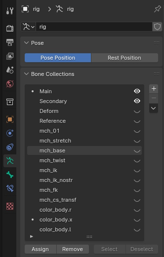
Armature Layers
Note
Armature layers are part of Blender 3.6 and earlier only
Layer 0: Main controllers
Layer 1: Secondary controllers
Layer 16: Other picker bones
Layer 17: Reference bones
Layer 31: Deforming bones
Others: For internal use only
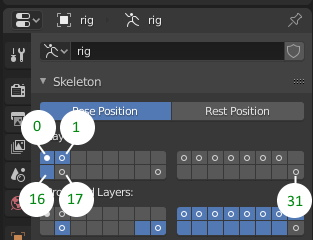
Rig Overview
User Interface - Controllers
Controller bones can be selected directly in the 3d view or by using the bone picker interface.
To hide controllers in the viewport, disable the “overlays”:
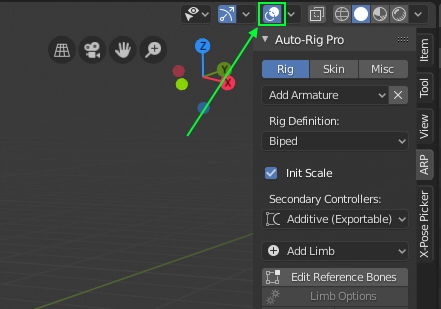
Picker Panel :You can easily select a group of controllers (arms, legs, secondary…) by making a rectangle selection (B key), show/hide layers… Note the picker layout can be customized, by default all buttons are spread on a grid template, but their position can be changed (see Picker Panel)
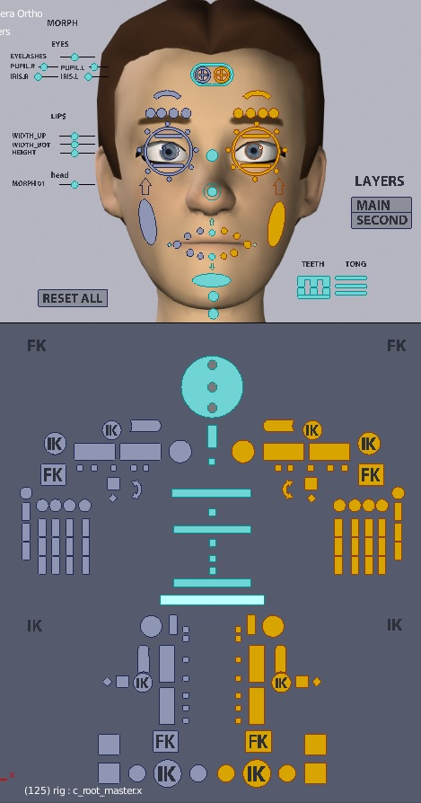
Naming
Bones named with c_ prefix (e.g. “c_root_master.x”) are “controller”: they are selectable, they’re meant to be animated. They may deform or not deform meshes.
Bones named with _ref suffix (e.g. “root_ref.x”) are “reference”: they’re just guides used to align the final rig on. They’re not part of the rig system itself but they’re part of the armature, in a hidden layer, revealed when clicking “Edit Reference Bones”. They don’t deform meshes.
Bones named without prefix are internal bones necessary for the rig mechanic. They may deform or not deform meshes.
.l and .r stands for the left or right side of the character (+X, -X). Right controllers are blue, left are red.
.x suffix means they belong to the center of the character, in green.
Shapes objects for bone display have the prefix cs_ (custom shapes).
Rig Usage
Scaling the character
To apply a global scale, the “c_pos” and “c_traj” controllers can be scaled, or alternatively the whole armature object (in that case, all mesh objects must be parented to the armature).
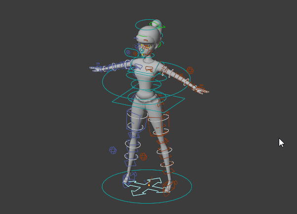
The main controllers are fully scalable except a few ones. Don’t unlock the transforms values, it would lead to strange behaviors. Use the secondary controllers instead (second layer) to scale a specific part.
Arms and Legs
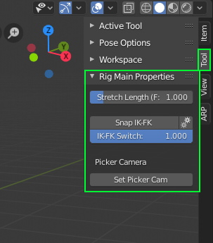
To display the arms and legs properties, select an arm or leg controller (c_hand_ik.l for example). Press N key to display the properties panel on the right side of the 3d view and go to the Tool tab > Rig Main Properties
IK-FK Switch
To manually switch the kinematic type, from 0.0 (IK) to 1.0 (FK).
In IK mode, the feet stick to their position when moving the main pelvis controller (c_root_master). The legs rotation is controled by the foot position in a dynamic way.
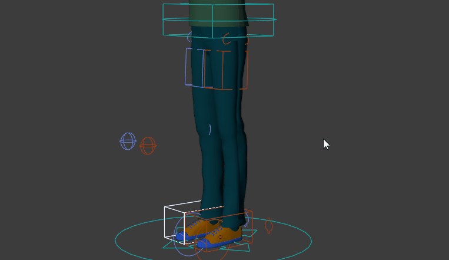
In FK mode, each bone can be rotated individually, the legs bones inherit the main pelvis controller position and rotation.
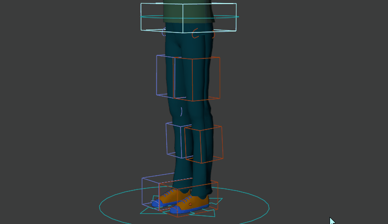
Snap IK-FK
Switch and snap the kinematic mode. If currently set to IK, will set to FK, and vice versa.
Note
Access the manual, advanced snap features by clicking the Gears icon button:
Snap FK > IK
Snap the FK chain onto the IK chain. The IK-FK switch will be set to FK (1.0) accordingly.
Snap IK > FK
Snap the IK chain onto the FK chain. The IK-FK switch will be set to IK (0.0) accordingly.
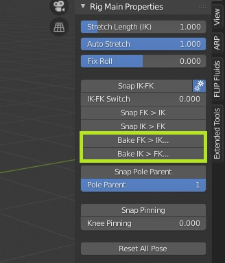
Bake FK > IK
Snap the FK chain onto the IK chain for a specified frame range, and bake it to keyframes. Useful when converting an FK animation to IK.
Bake IK > FK
Snap the IK chain onto the FK chain for a specified frame range, and bake it to keyframes. Useful when converting an IK animation to FK.
Arm FK Lock
This setting is not enabled by default. Must be turned on in arms Limb Options, see Arm FK Lock-Free
The upperarm will inherit the rotation of the torso (default locked behavior) or the master c_traj rotation when it’s unlocked.
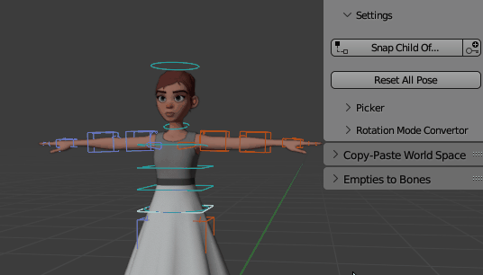
Leg FK Lock
This setting is not enabled by default. Must be turned on in legs Limb Options, see Thigh FK Lock-Free
The thigh will inherit the rotation of the pelvis (default locked behavior) or the master c_traj rotation when it’s unlocked.
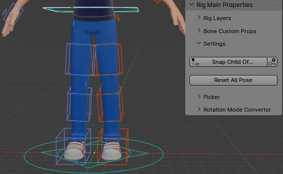
Stretch Length
To specify the length of the IK or FK chain
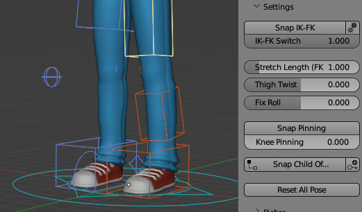
Auto Stretch
To enable/disable auto-stretch (IK chain only). Enable = 1, Disable = 0
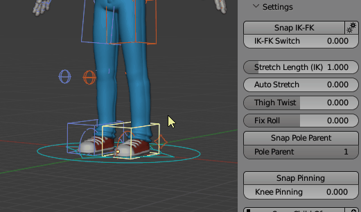
Fix Roll
Deprecated feature, now useless since new and better twist constraints have been set in recent updates. Fix the ankle roll/twist effect when the foot is highly rotated. Useful for quadruped rigs.
Snap Pole Parent (IK only)
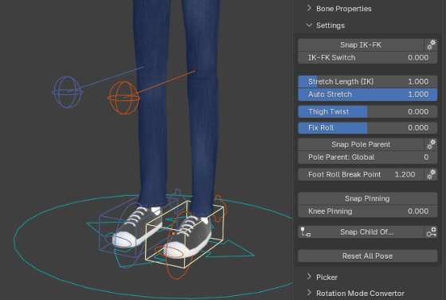
Snap Pinning
Switch the Pinning setting to 1 or 0 and snap the related bones (elbow or knee) automatically.
Legs
Legs Main Controllers
Select the controller c_foot_roll_cursor to access these foot motion:
Bank left-right: translate Z axis
Foot rotation from heel/end toes: translate X axis
Foot rotation from the toes: Select the controller c_foot_01 to rotate the heel from the toes pivot.

In IK mode, the knee/elbow can be oriented using the pole controller, or using the direct rotation controller (pressing RR (two times R Key) is recommended to rotate it easily)
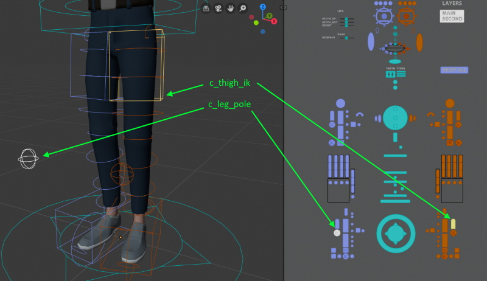
Foot Roll Break
[Not enabled by default, must be turned on in Limb Options: Foot Roll Break]
If enabled, the foot will rotate first from the ball pivot when raising the c_foot_roll_cursor, then from the tip toes pivot when reaching a given value.
Foot Roll Break Point: When the c_foot_roll_cursor position reaches this value, the foot will start rotating from the tip toes pivot. Below this value, from the ball.
Foot Roll Speed: Global value to adjust how fast the foot rolls when moving the c_foot_roll_cursor
Foot Roll Overshoot: When starting to rotate from the tip toes pivot, this value controls how far the toes will rotate backward
Foot Roll Unfold Lag: Controls how fast the ball rotation fades out when terminating the foot rool motion. The higher this value is, the slower the ball rotation will be reset to zero
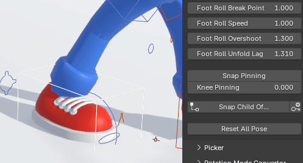
Legs 3 Bones
When the leg is setup with 3 bones (3 Bones Leg), the IK constraint may affect 2 or 3 bones, using the 3 Bones IK slider:
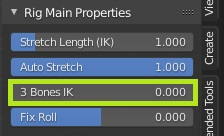

Elbows and Knees Pinning
Select the pinning bone and set the pinning property to 1.0 for a full pinning.
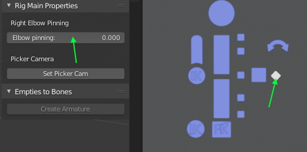
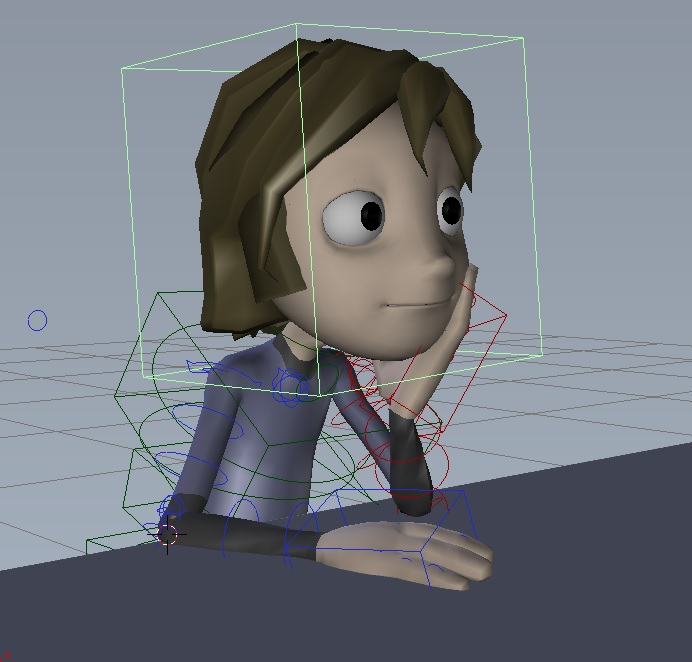
Typical example of a character with pinned elbow on the table to virtually stick them to the surface.
Neck
If neck twist bones are enabled, the neck twist amount can be adjusted with Neck Global Twist and Neck Twist
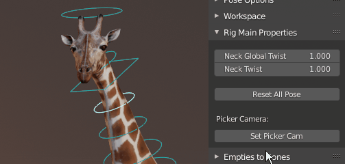
Head
The head rotation can inherit or disinherit the neck rotation by selecting the head controller and setting the Head Lock value. The Snap Head Lock button will automatically switch the value and preserve the head rotation.
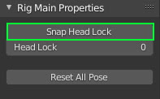
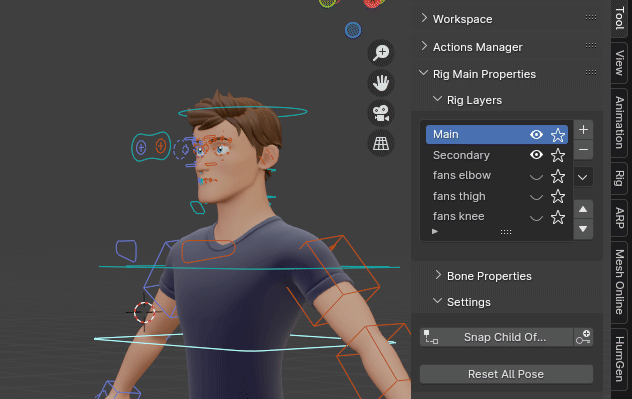
Lips
By selecting the jaw controller, use the Lips Retain value with additional stretch and squash to keep the lips sealed when opening the jaw.
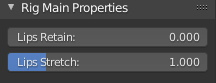
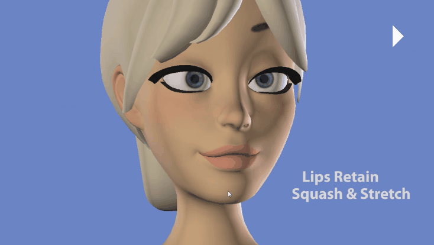
If Sticky Lips is enabled, the Lips Follow setting allows to keep the upper lips in line with the lower lips when moving the jaw on the sides:
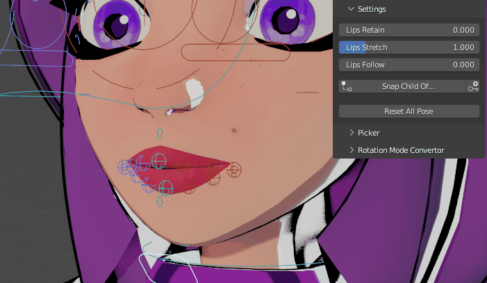
Eyes and Targets
There are two options to animate the eyes: the eye targets (IK), or the eye rotation controllers (FK).
The target controller is the big one, containing the two circles for left and right eyes
The eye rotation controllers are the smaller ones, closer to the eyeballs
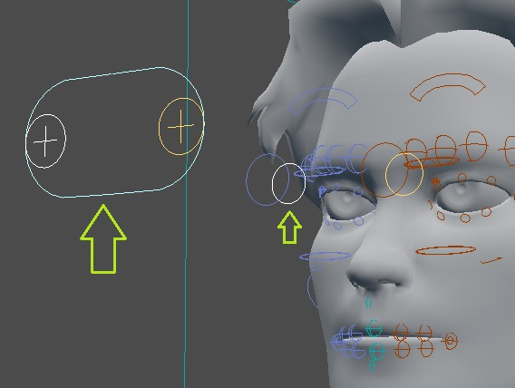
Picker: select the circle under the eyebrows, inside of the big one. The smallest one, in the center, controls the eye reflection.
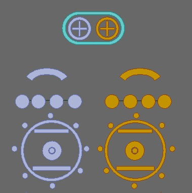
When selecting an eye controller, this property will be displayed in the property panel to let you choose wich option you want to use:
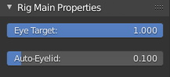
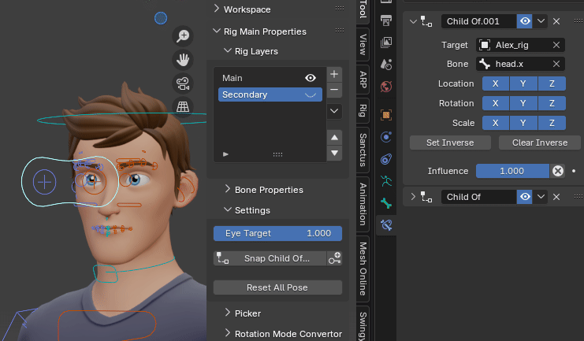
Auto-Eyelids
The amount of automatic eyelid rotation, based on the eyes rotations, can be found when clicking on the eyes or eyelids controllers
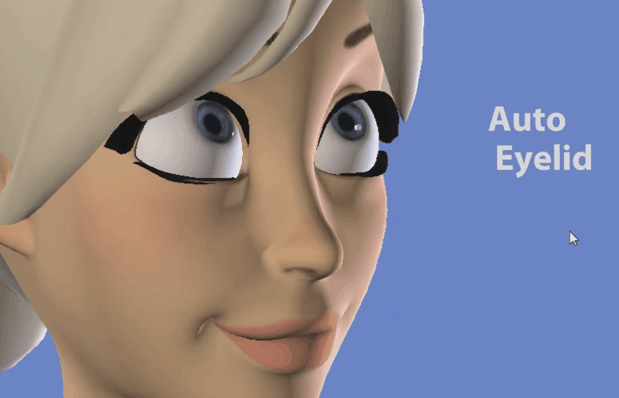
Fingers
Fingers Bend
To bend all fingers at once, select the hand controller, and tweak the Fingers Grasp property in the Rig Main Properties tab:
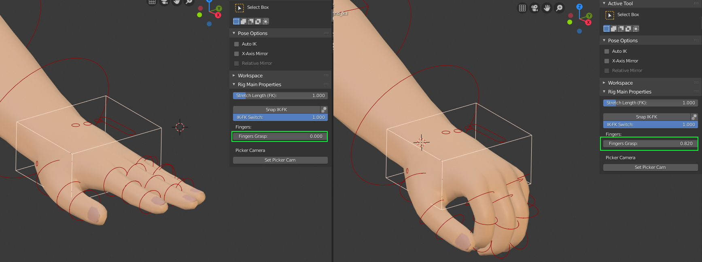
It rotates 2 or 3 phalanges depending on the rigging setup (see Rotate Fingers from Scale ).
Note
This only rotates fingers linearly on the X axis though, it may not be accurate enough to make a decent fist pose. Use the Hand Fist feature to make a real fist pose.
You can rotate the three finger phalanges at once by selecting the base finger bone of any finger and use this parameter:
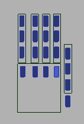
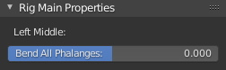
Fingers Fist
If a fist controller (Hand Fist) has been added on the hand, it will nicely curl the fingers into a pre-defined fist pose when scaling it. It is more accurate than the Grasp Fingers property:
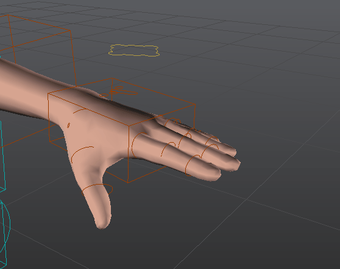
Fingers Rot from Scale
If the rig is setup with the Rot from Scale parameter, scaling the first phalange will rotate the other phalanges.
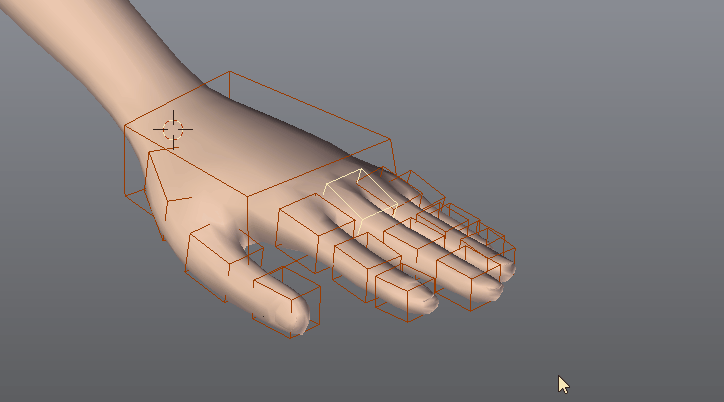
Fingers Auto-Spread
Rotating the base finger of the pinky will spread out the other fingers as well:
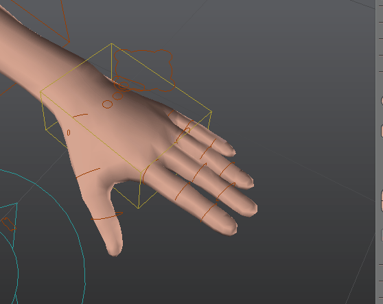
Fingers IK-FK
If IK-FK is enabled for fingers, fingers can be manipulated with these controllers and settings:
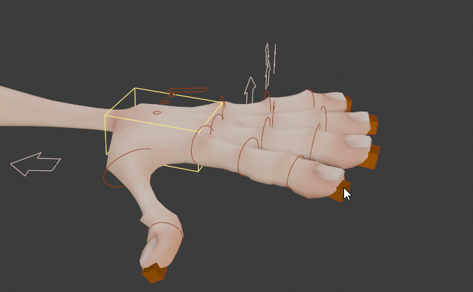
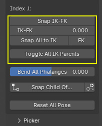
Snap IK-FK: Switch the IK-FK property and snap finger bones automatically to preserve their current pose
IK-FK: The IK-FK switch property value, from 0.0 (full IK) to 1.0 (full FK)
Snap All to IK/FK: Snaps IK-FK for all fingers at once
Toggle All IK Parents: Enable or disable the IK target Child Of constraint, to free them or lock them to the hand, while preserving their current pose.
Secondary controllers
Feel free to make an extensive use of the secondary controllers for fine pose sculpting. For example, here is an extreme leg deformation (default skinning weights), before and after tweaking:
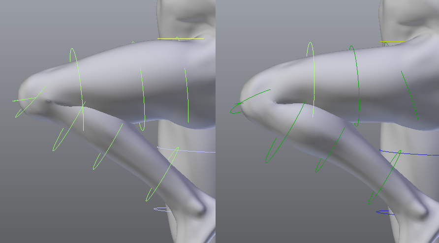
Additionnaly, you can create corrective shape keys. Choose the workflow you prefer!
Spline IK
Spline IK limbs have various options to enable or disable stretch (Y Scale), volume preservation and variation.
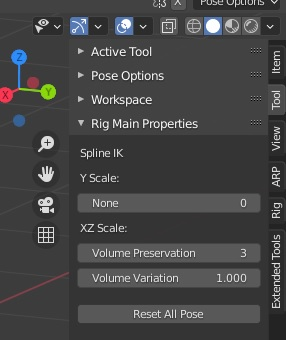
If IK-FK Chain is enabled in Limbs Options (see Spline IK Options), an IK-FK switch and Snap settings are also there.
Note
IK to FK snapping is accurate, but FK to IK is not by nature: compensating the smooth curve interpolation between control points is quite a technical challenge, to be improved later if possible.
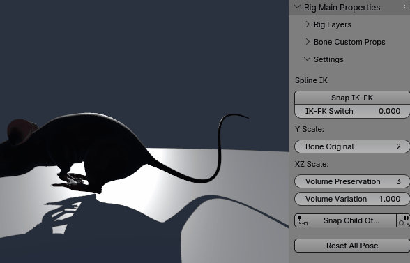
Extract Root Motion
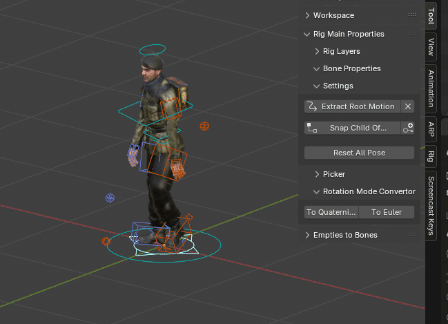
Also useful to extract and export root motion animations to Unreal Engine.
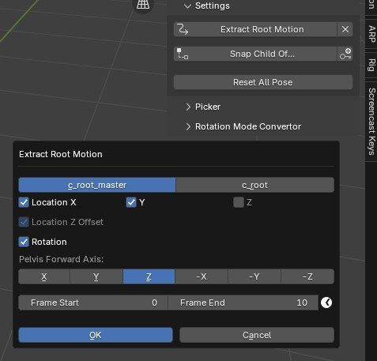
c_root_master / c_root: Target bone that the c_traj bone will track in order to evaluate root motion, either c_root_master or c_root.
Location X,Y,Z: Location axes that will be evaluated when tracking. Generally, Z should be skipped since the pelvis height is not supposed to be part of the root motion, but can be useful in some cases (flying, climbing, jumping motions)
Location Z Offset: If the Z axis is enabled, the initial Z distance (on the start frame) between the c_traj bone and pelvis bone is maintained
Rotation: Enables Rotation extraction
Pelvis Forward Axis: Axis of the pelvis bone that is used to track the rotation. Typically Z by default in Auto-Rig Pro armatures, but can be another axis if armatures where generated with Quick Rig for example, leading to different default axes. The Y axis of the c_traj bone will be aligned with it.
Frame Start - Frame End: Frame range defining the root motion extraction baking process.
Mirror the Pose
Select the controllers you want to mirror then click these buttons:
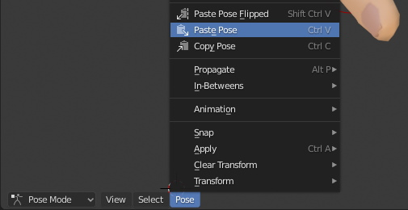
ChildOf Switcher
Add two ChildOf constraints to the c_hand_ik controller, with the steering wheel and door as targets. New ChildOf constraints can be added to any bones, see the Blender manual.
When animating, switch between constraints by using the ChildOf Switcher.

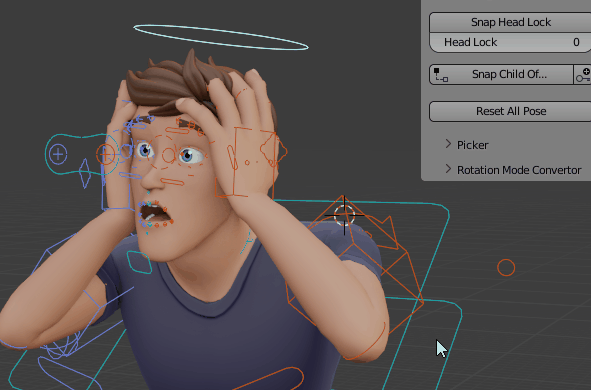
Rig Layers
Rig Layers is a list of custom layers for rig and characters related elements, to quickly hide or show components: armature layers, bones, collection and objects. Useful to toggle some features of a character (clothes, props…) or show/hide a given set of controllers.
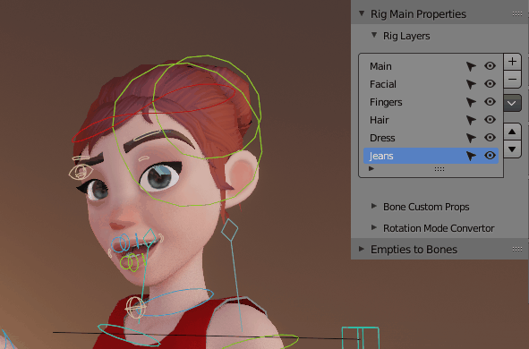
Animated visibility is supported if the “Animated Layers” toggle is enabled:
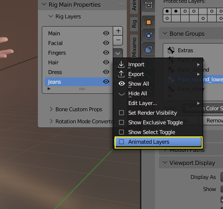
UI Camera for Multiple Characters
In case of multiple characters in the scene, to update the picker window view with the selcted characters, click Set Picker Cam in the Rig Main Properties tab.
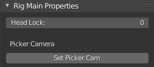